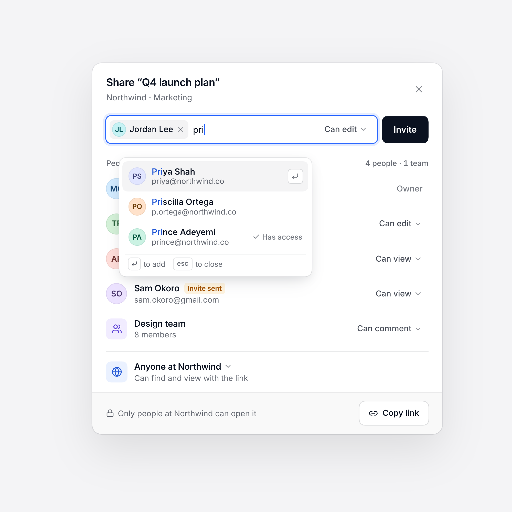
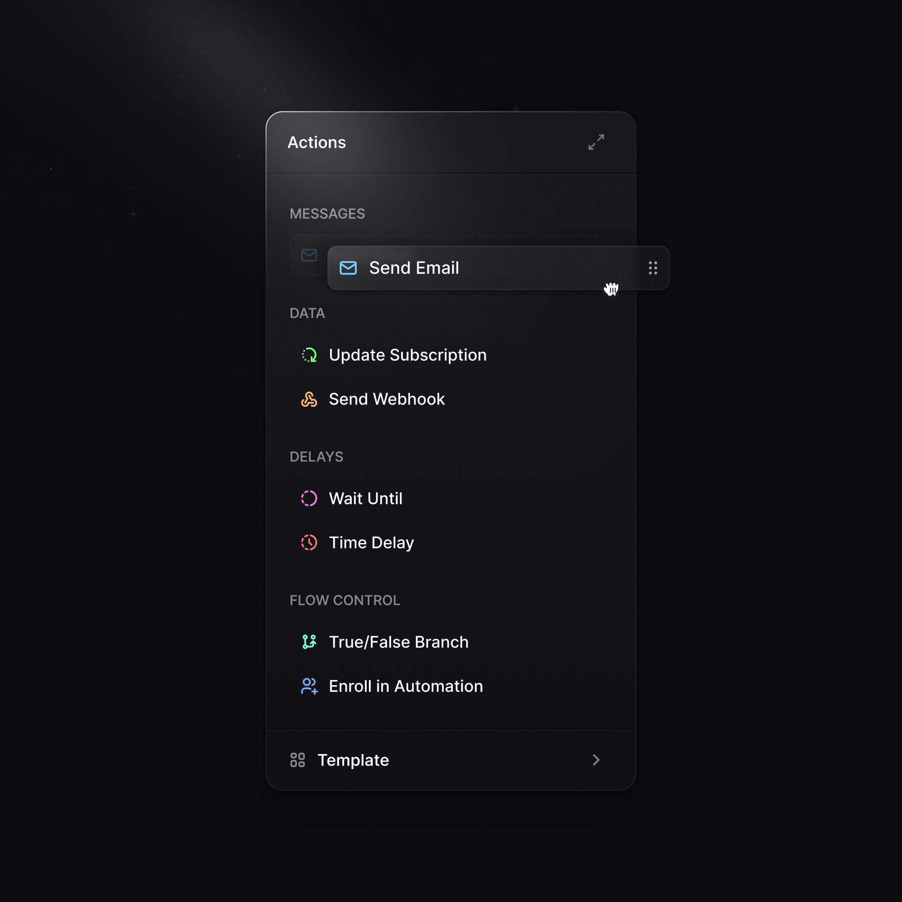
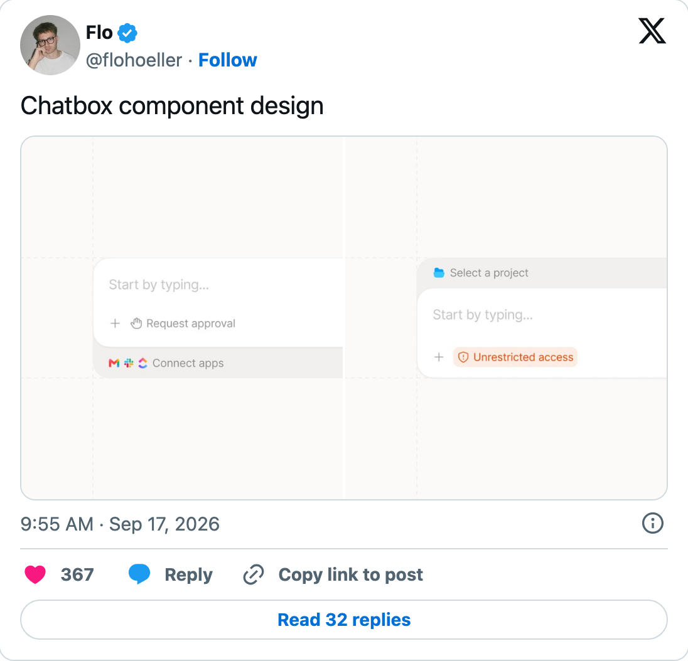
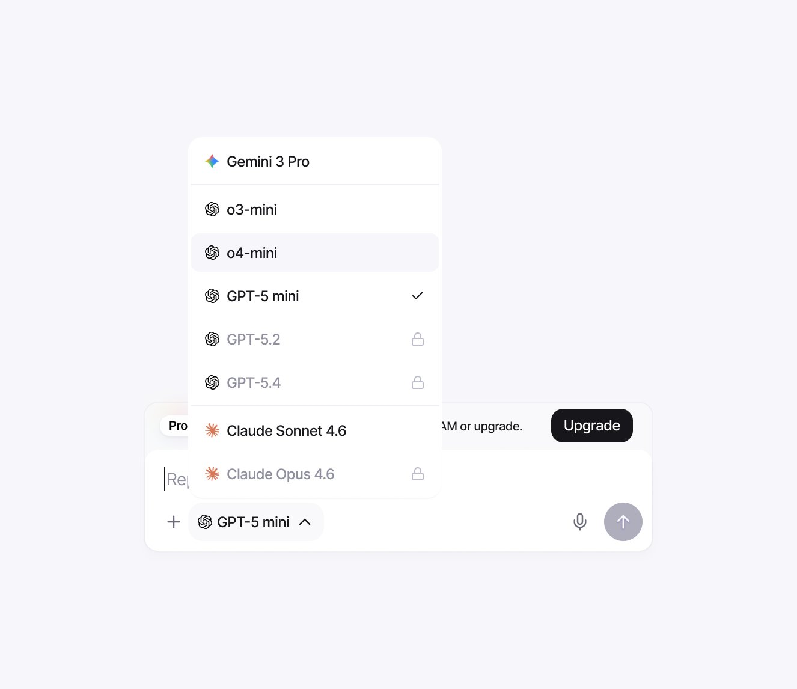
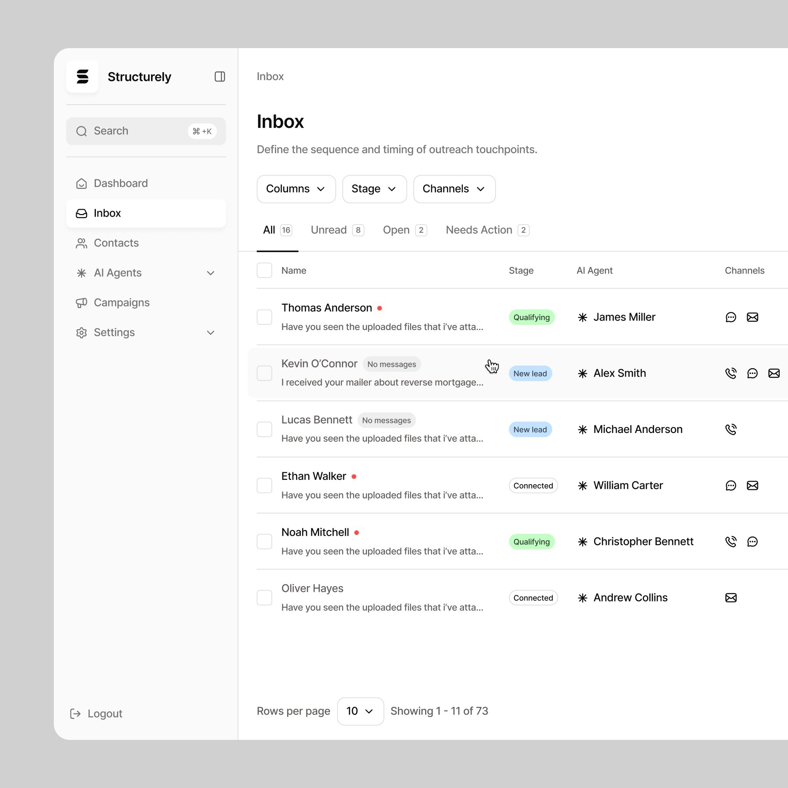
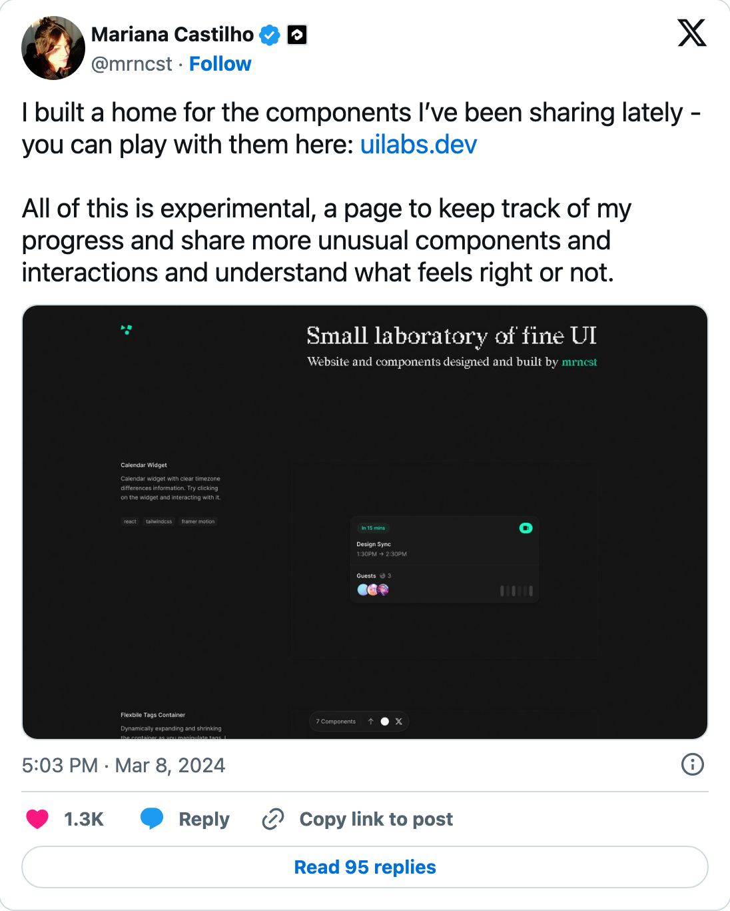
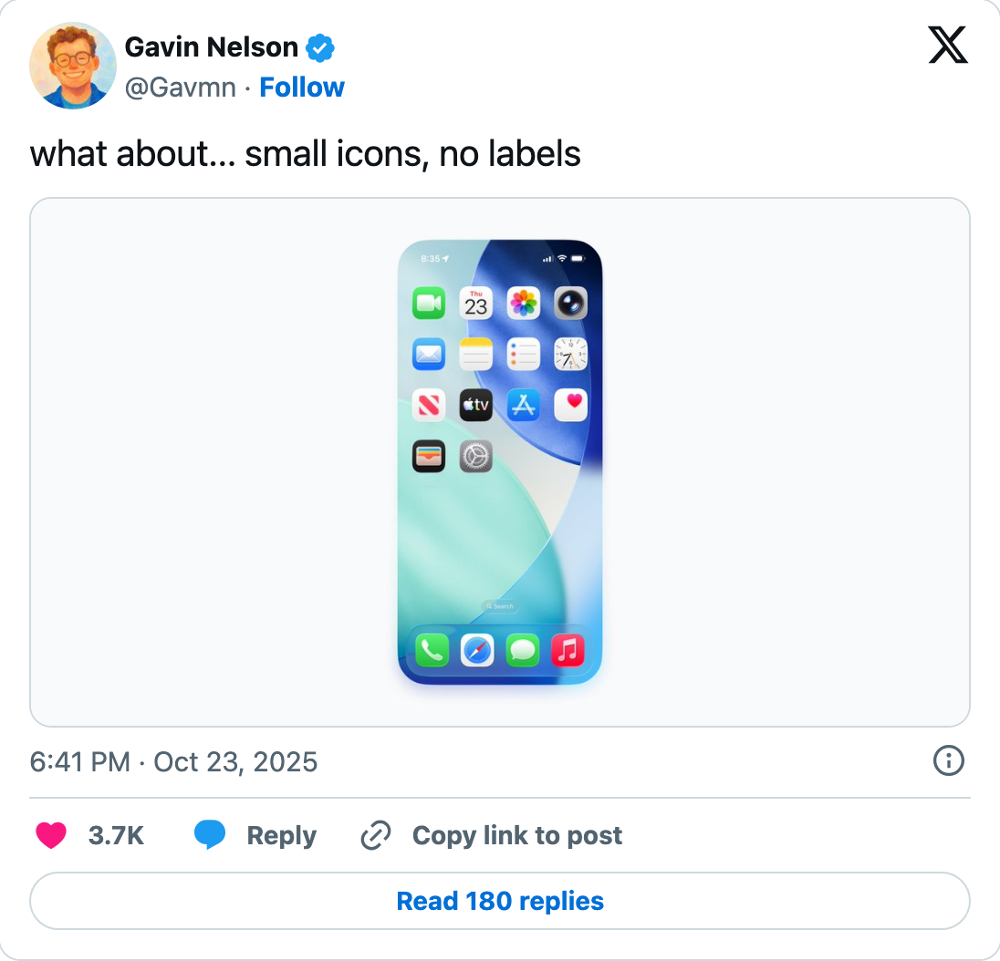

| check | status | value | want | rule |
|---|---|---|---|---|
| format.ratio | pass | 1.000 | 0.84-1.78 (square 1:1 is normal for one component: Marcel kx-036, Kuleszo kz-129/274; 16:9-3:2 for screens; 7:8 for pairs) | XP-07 / XP-04, measured refs |
| format.export-px | pass | 2000x2000 | >= 2000 px wide | XP-11 |
| canvas.solid | pass | corner std 0, chroma 2 | solid canvas (cleanest corner std <= 5: Marcel streak 4.3, Kuleszo 0.0; chroma <= 14): no gradient blobs, glass, dither, wallpapers | XP-08, measured refs |
| subject.marked | pass | yes | mark the component with data-subject | design view |
| subject.crop | pass | 0.68 | close crop 35-75% of frame width (component at 1.5-2x; Kuleszo 55-75%), or far 12-20% | XP-09, AKZ |
| subject.feed-legible | pass | 7.0px at 514px feed | smallest component text >= 6.5px in the 514px feed tile (scale the component up, not the text down) | XP-28 |
| media.no-headline | pass | none | no headline text in the media; the caption carries the words | XP-12 |